分享目标
本文通过Java volatile探讨以下问题
- Volatile多线程引发的缓存一致性问题
- Volatile多线程引发的不可见问题
- Volatile多线程引发的原子性问题
- 指令重排序含义及相关语义和规则
- 内存屏障的分类和使用
- 源码跟踪
1.1 多线程之间通信机制
线程之间的通信机制有两种：共享内存和消息传递,Java的并发采用的是共享内存模型机制。
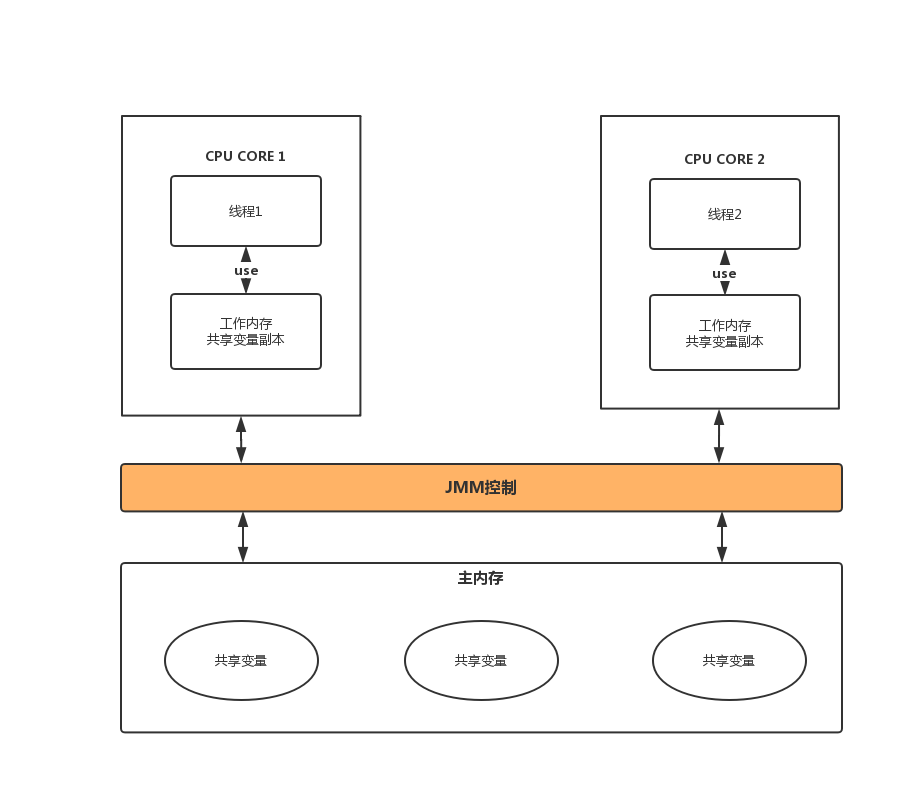
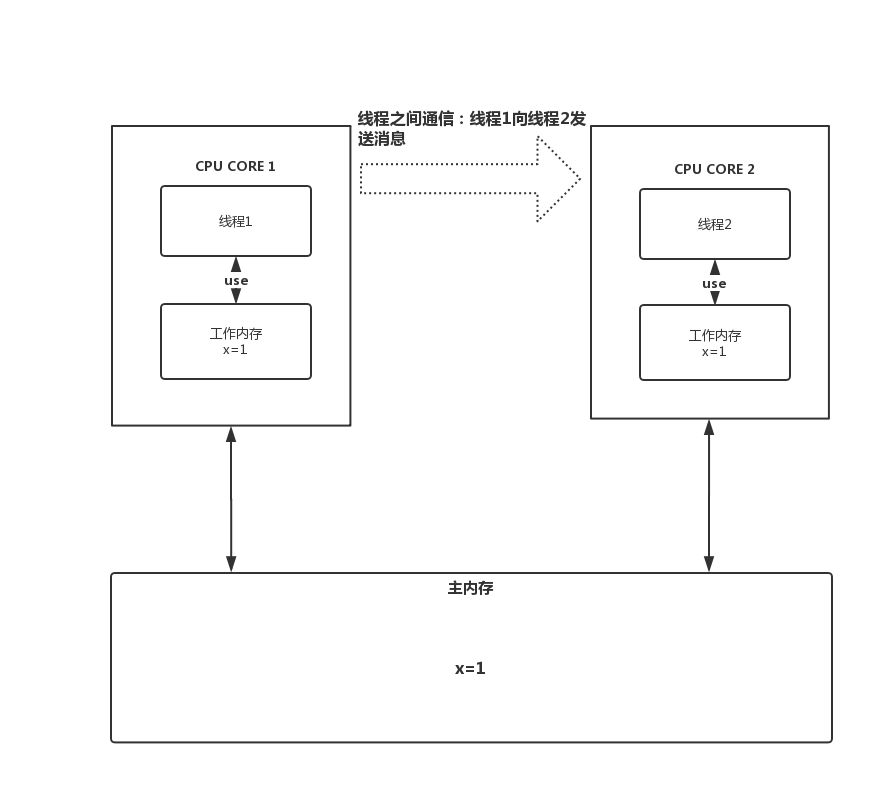
1.2 原子性操作
在探讨问题之前需要先了解一下JMM的内存模型提供的八大原子性操作：
read(读取): 从主内存读取数据
load(载入): 将主内存读取到的数据写入工作内存中
use(使用): 从工作内存读取数据来计算
assign(赋值): 将计算好的值重新赋值到工作内存中
store(存储): 将工作内存数据写入主内存读写缓冲(loadStoreBuffer)
write(写入): 将读写缓冲的变量赋值给主内存中的变量
lock(锁定): 将读写缓冲中共享变量加锁,标识为线程独占状态
unlock(解锁): 将读写缓冲中共享变量解锁,解锁后其他线程可以锁定该变量
1.3 MESI缓存行
MESI协议是以缓存行(缓存的基本数据单位，在Intel的CPU上一般是64字节)的几个状态来命名的(全名是Modified、Exclusive、 Share or Invalid)。该协议要求在每个缓存行上维护两个状态位，使得每个数据单位可能处于M、E、S和I这四种状态之一，各种状态含义如下：
M：所有CPU把缓存状态改为I之后，会向主内存同步数据
E：独占的。处于这一状态的数据，只有在本CPU中有缓存，且其数据没有修改，即与内存中一致
S：共享的。处于这一状态的数据在多个CPU中都有缓存，且与内存一致
I：无效的。本CPU中的这份缓存已经无效
1.4 Javap命令详解
用法: javap <options> <classes>
其中, 可能的选项包括:
-help --help -? 输出此用法消息
-version 版本信息
-v -verbose 输出附加信息
-l 输出行号和本地变量表
-public 仅显示公共类和成员
-protected 显示受保护的/公共类和成员
-package 显示程序包/受保护的/公共类
和成员 (默认)
-p -private 显示所有类和成员
-c 对代码进行反汇编
-s 输出内部类型签名
-sysinfo 显示正在处理的类的
系统信息 (路径, 大小, 日期, MD5 散列)
-constants 显示最终常量
-classpath <path> 指定查找用户类文件的位置
-cp <path> 指定查找用户类文件的位置
-bootclasspath <path> 覆盖引导类文件的位置
2、多线程下共享变量引发问题
2.1 缓存不一致及不可见问题
多线程情况下未添加volatile关键字修饰导致出现死循环：
public class VolatileTest {
private static boolean initFlag = false;
public static void main(String[] args) throws InterruptedException {
new Thread(new Runnable() {
@Override
public void run() {
System.out.println("waiting data...");
while (!initFlag) {
}
System.out.println("success...");
}
}).start();
Thread.sleep(2000);
new Thread(new Runnable() {
@Override
public void run() {
prepareData();
}
}).start();
}
private static void prepareData() {
System.out.println("prepareData...");
initFlag = true;
System.out.println("prepare commit...");
}
}
运行结果：
waiting data...
prepareData...
prepare commit...
线程一永远处理阻塞状态，无法获取到线程2修改后的最新数据；
上述代码的交互流程：
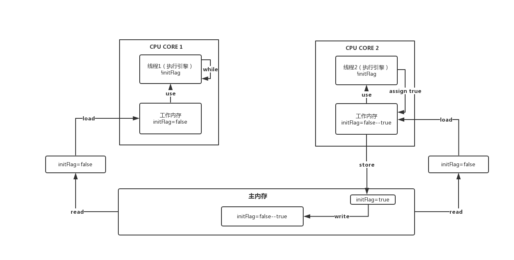
T1和T2同时从主内存加载initFlag = false，各自进行代码执行。T二修改initFlag为true并写入主内存；而T1并不知晓，initFlag变量是属于有效状态一直处于false，代码处于while中一直无法跳出，导致死循环。
2.2 原子性问题
volatile关键字并不能保证原子性，利用volatile来修饰Increment的变量是一种错误的写法：
public class AtomicDemo implements Runnable {
private volatile static int count = 0;
private static ExecutorService executor = Executors.newCachedThreadPool();
public static void main(String[] args) {
for (int i = 0; i < 1000; i++) {
executor.submit(new AtomicDemo());
}
System.out.println("count累加运行结果：" + count);
executor.shutdown();
}
@Override
public void run() {
count++;
}
}
count累加运行结果：967
count累加运行结果：958
上述代码运行结果永远是小于等于1000，那么为什么不是每次都是1000呢？
2.2.1 内存原子操作流程
通过内存原子操作演练一下count++的流程：
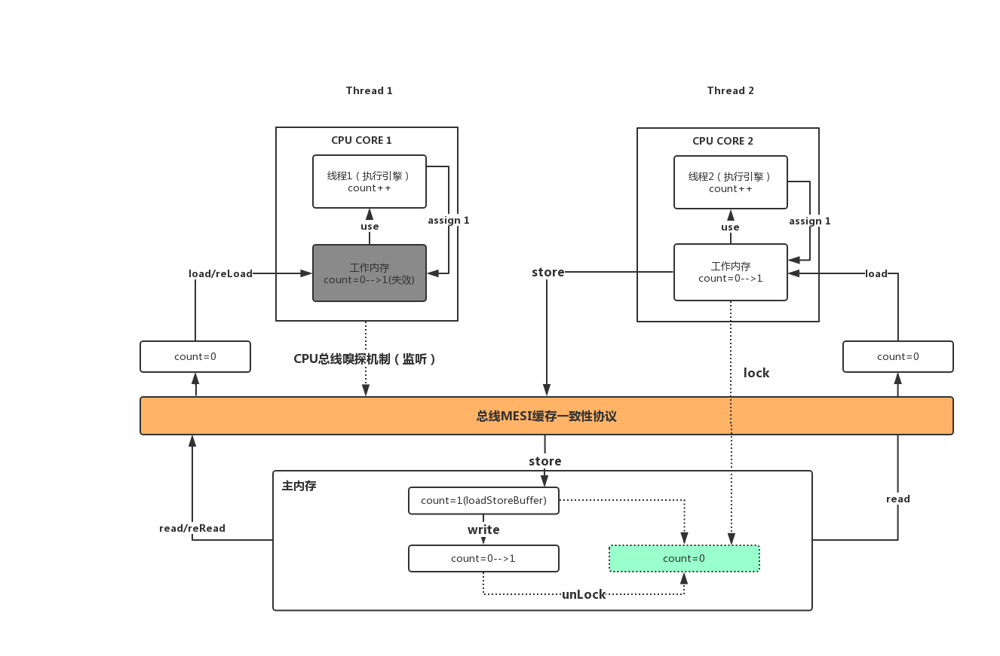
T1T2线程同时读取(read)和加载(load)count=0到各自的工作内存，然后复制给执行引擎进行Increment计算，T2 Increment后assign count=1回到工作内存，这时候T1也是同样的操作，当然这时候T1也可以还在执行引擎计算未执行assign操作。这时候T2需要把修改后的数据(storeBuffer)强制写回主内存（StoreLoad屏障），在这之前需要进行lock操作锁定主内存(绿色)count变量，当回写操作通过总线MESI缓存一致性协议时，其他线程会通过CPU总线嗅探机制监听到，各自把各自工作内存中的count变量状态设置为失效状态。那么这时候T1可能已经是Increment后的值count=1,那么T1再次计算count累加时需要重新从主内存再次读取和加载，获取到count=1。实际上T1和T2已经对count进行了2次Increment按道理来说这时候count的值为2，而其他线程这时候拿到的却是1，导致count累加值丢失。
由上图可以看出count++并非单个原子性操作，它需要先read->load->use->assign->store->write操作才能完成整个操作，虽然上述单个操作都是原子性操作，但是组合起来就是非原子性了。
2.2.2 字节码跟踪流程
为了演示，我们尽可能使用少量代码，通过javap -v -p 命令对class文件进行字节码展示：
public class VolatileTest {
volatile int i = 1;
public void inc(){
i++;
}
public static void main(String[] args) {
new VolatileTest().inc();
}
}
反汇编后的字节码:
public class com.example.demo.VolatileTest
{
volatile int i;
descriptor: I
flags: ACC_VOLATILE //volatile i 添加ACC_VOLATILE修饰符
public com.example.demo.VolatileTest();
descriptor: ()V
flags: ACC_PUBLIC
Code:
stack=2, locals=1, args_size=1
0: aload_0
1: invokespecial #1 // Method java/lang/Object."<init>":()V
4: aload_0
5: iconst_1
6: putfield #2 // Field i:I
9: return
LineNumberTable:
line 8: 0
line 10: 4
LocalVariableTable:
Start Length Slot Name Signature
0 10 0 this Lcom/example/demo/VolatileTest;
public void inc();
descriptor: ()V
flags: ACC_PUBLIC //方法访问修饰符
Code:
stack=3, locals=1, args_size=1
0: aload_0 //取this对应的对应引用值，压入操作数栈,也就是VolatileTest的实例，即getfield的主体
1: dup //复制栈顶数值，并压入栈顶,此时栈中有两个值，都是this对象引用
2: getfield #2 // Field i:I //获取对象i字段，将其值压入栈顶
5: iconst_1 //int型常量1进栈
6: iadd //弹出栈中的i值和常量1，进行加操作，并将结果压入栈
7: putfield #2 // Field i:I //赋值对象i字段 i=1
10: return //return void
LineNumberTable:
line 13: 0
line 14: 10
LocalVariableTable:
Start Length Slot Name Signature
0 11 0 this Lcom/example/demo/VolatileTest;//看这里
}
字节码中inc方法中第2、6、7分别3步操作getfield->iadd->putfield，这就是同学们说的i++并不是单个原子性操作，多线程情况下getfield并不能保证获取到最新值，造成数据操作丢失，出现原子性问题。
3、 解决方案
- 总线加锁
- 共享变量加锁
3.1 总线加锁机制（性能太低）
最早期的X86解决方案是使用总线加锁机制来实现共享变量数据一致性问题。从主内存读取数据到高速缓存，会在总线对这个数据进行加锁，这样其他CPU没法去读或者写这个数据，直到锁释放后才能给其他CPU操作数据，这个机制虽然解决了数据一致性问题，但是对多核CPU来说由原来的并行执行改为串行执行，性能非常的低下；
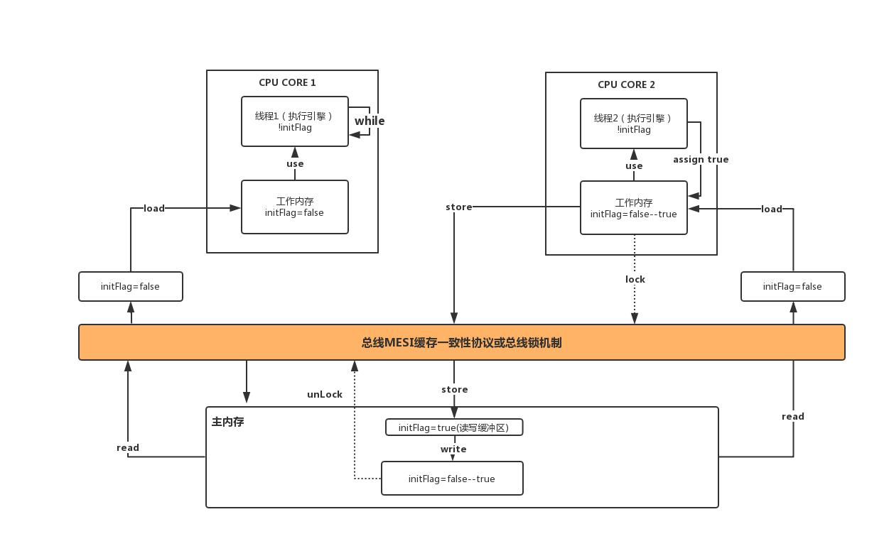
3.2 MESI缓存一致性协议
多个CPU从主内存读取共享数据到各自的高速缓存，当其中某个CPU修改了缓存里的数据，该数据会马上同步回主内存，其他CPU通过总线嗅探机制可以感知到数据的变化从而将自己缓存里的数据设置失效，当线程处理存储操作时会在store前调用lock操作，数据write主内存后进行unLock操作。如果多个线程都来修改共享变量就会进行锁竞争；
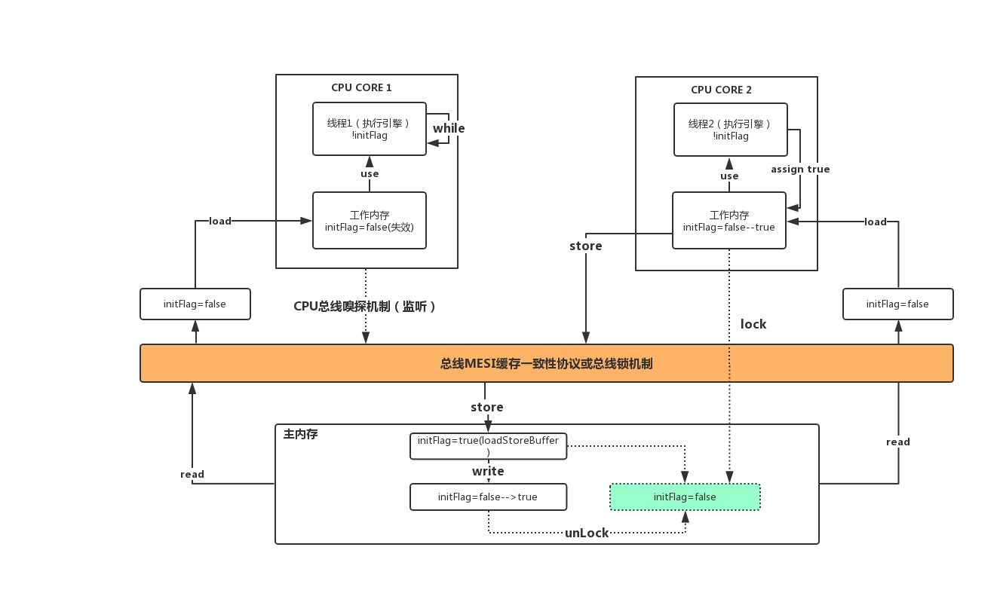
4、指令重排序
重排序是指编译器和处理器为了优化程序性能而对指令序列进行重新排序的一种手段。重排序分为两类：编译期重排序和运行期重排序，分别对应编译时和运行时环境。
- 编译期重排序的典型就是通过调整指令顺序，在单线程下不改变程序语义的前提下，尽可能减少寄存器的读取、存储次数，充分复用寄存器的存储值。
假设第一条指令计算一个值赋给变量A并存放在寄存器中，第二条指令与A无关但需要占用寄存器（假设它将占用A所在的那个寄存器），第三条指令使用A的值且与第二条指令无关。那么如果按照顺序一致性模型，A在第一条指令执行过后被放入寄存器，在第二条指令执行时A不再存在，第三条指令执行时A重新被读入寄存器，而这个过程中，A的值没有发生变化。通常编译器都会交换第二和第三条指令的位置，这样第一条指令结束时A存在于寄存器中，接下来可以直接从寄存器中读取A的值，降低了重复读取的开销。
- 运行期重排序包含指令并行的重排和内存系统的重排
- 指令并行重排序是通过处理器采用了指令级并行技术来将多条指令重叠执行。需要建立在数据不存在依赖性时处理器可以改变语句对应的机器指令的执行顺序的情况下
- 内存系统重排序是指处理器使用缓存和读写缓冲区，这使得加载(load)和存储(store)操作看上去可能是在乱序执行
从 java 源代码到最终实际执行的指令序列，会分别经历下面三种重排序：
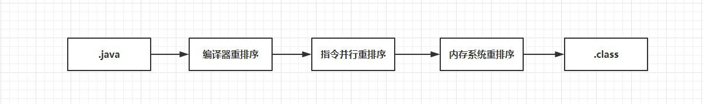
4.1 数据依赖性
如果两个操作访问同一个变量，且这两个操作中有一个为写操作，此时这两个操作之间就存在数据依赖性。数据依赖分为下列3种类型：
| 名称 | 代码示例 | 说明 |
|---|---|---|
| 写后读 | a=1;b=a; | 写一个变量后，再读这个变量 |
| 写后写 | a=1;a=2; | 写一个变量后，再写这个变量 |
| 读后写 | a=b;b=1; | 读一个变量后，再写这个变量 |
上面3种情况，只要重排序两个操作的执行顺序，程序的执行结果就会被改变。前面提到过，编译器和处理器可能会对操作做重排序。编译器和处理器在重排序时，会遵守数据依赖性，编译器和处理器不会改变存在数据依赖关系的两个操作的执行顺序。这里所说的数据依赖性仅针对单个处理器中执行的指令序列和单个线程中执行的操作，不同处理器之间和不同线程之间的数据依赖性不被编译器和处理器考虑。
4.2 as-if-serial语义
as-if-serial语义的意思是：不管怎么重排序程序的执行结果不能被改变(单线程)。编译器、runtime和处理器都必须遵守as-if-serial语义。为了遵守as-if-serial语义，编译器和处理器不会对存在数据依赖关系的操作做重排序，因
为这种重排序会改变执行结果。但是，如果操作之间不存在数据依赖关系，这些操作就可能被编译器和处理器重排序。代码示例，计算圆的面积：
double pi = 3.14; // A
double r = 1.0; // B
double area = pi * r * r; // C
代码C依赖A和B,代码依赖操作流程：
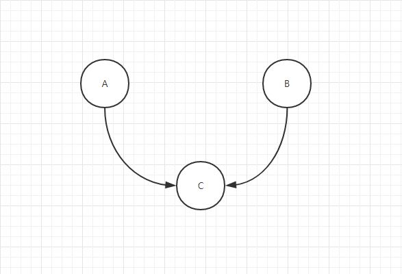
A和B之间没有数据依赖关系，编译器和处理器可以重排序A和B之间的执行顺序。该程序的两种执行顺序如下：
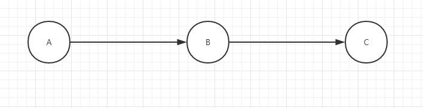
area = 3.14
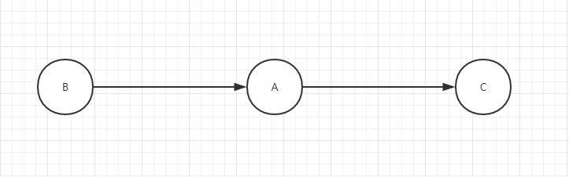
area = 3.14
编译器和处理器重排序后，不仅优化了编译指令还能保证最终执行结果也一致。
as-if-serial语义把单线程程序保护了起来，遵守as-if-serial语义的编译器、runtime和处理器共同为编写单线程程序的程序员创建了一个幻觉：单线程程序是按程序的顺序来执行的。asif-serial语义使单线程程序员无需担心重排序会干扰他们，也无需担心内存可见性问题。
4.3 happens-before规则
根据happens-before的程序顺序规则，上面计算圆的面积的示例代码存在3个happensbefore关系。
A happens-before B
B happens-before C
A happens-before C
这里的第3个happens-before关系，是根据happens-before的传递性推导出来的。
这里A happens-before B，但实际执行时B却可以排在A之前执行（看上面的重排序后的执行顺序）。如果A happens-before B，JMM并不要求A一定要在B之前执行。JMM仅仅要求前一个操作（执行的结果）对后一个操作可见(A和B对C可见)，且前一个操作按顺序排在第二个操作之前（A和B排在C之前）。
这里操作A的执行结果不需要对操作B可见；而且重排序操作A和操作B后的执行结果，与操作A和操作B按happens-before顺序执行的结果一致。在这种情况下，JMM会认为这种重排序并不非法（not illegal），JMM允许这种重排序。
在计算机中，软件技术和硬件技术有一个共同的目标：在不改变程序执行结果的前提下，尽可能提高并行度。编译器和处理器遵从这一目标，从happens-before的定义我们可以看出，JMM同样遵从这一目标。
4.4 顺序一致性
顺序一致性内存模型是一个理论参考模型，在设计的时候，处理器的内存模型和编程语言的内存模型都会以顺序一致性内存模型作为参照。尽管最终执行指令在执行时并不一定按照我们所编写的顺序执行，但毋庸置疑的是，在单线程环境下，指令执行的最终效果应当与其在顺序执行下的效果一致，否则这种优化便会失去意义。
通常无论是在编译期还是运行期进行的指令重排序，都会满足上面的原则。
5、内存屏障
5.1 什么是内存屏障？
A memory barrier, also known as a membar, memory fence or fence instruction, is a type of barrier instruction that causes a CPU or compiler to enforce an ordering constraint on memory operations issued before and after the barrier instruction. This typically means that operations issued prior to the barrier are guaranteed to be performed before operations issued after the barrier.
内存屏障，也称内存栅栏，内存栅障，屏障指令等， 是一类同步屏障指令，是CPU或编译器在对内存随机访问的操作中的一个同步点，使得此点之前的所有读写操作都执行后才可以开始执行此点之后的操作。
5.2 内存屏障和happens-before是什么关系？
happens-before是JSR-133规范之一，内存屏障是CPU指令。可以理解前者是最终目的，后者是实现手段。
5.3 内存屏障分类
内存屏障分为Store屏障和Load屏障两大类：
基于保守策略的JMM内存屏障插入策略(绿色操作标志)：
在每个volatile写操作的前面插入一个StoreStore屏障
在每个volatile写操作的后面插入一个StoreLoad屏障
在每个volatile读操作的后面插入一个LoadLoad屏障
在每个volatile读操作的后面插入一个LoadStore屏障
上述内存屏障插入策略非常保守，但它可以保证在任意处理器平台，任意的程序中都能得到正确的volatile内存语义,在实际执行时，只要不改变volatile写-读的内存语义，编译器可以根据具体情况省略不必要的屏障。
5.3.1 LoadLoad屏障
抽象场景：Load1; LoadLoad; Load2
Load1 和 Load2 代表两条读取指令。Load2读取数据被访问（use）前，要保证Load1读取的数据被读取完毕。
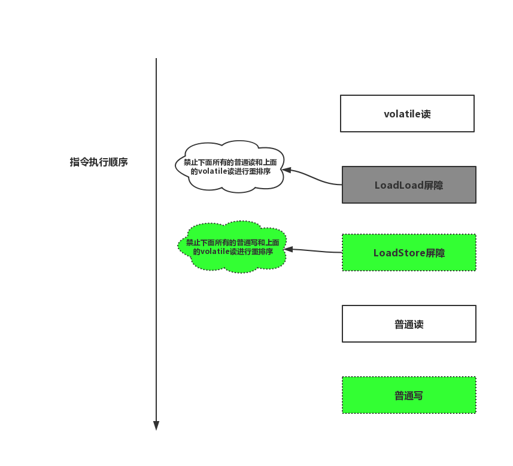
5.3.2 StoreStore屏障
抽象场景：Store1; StoreStore; Store2
Store1 和 Store2代表两条写入指令。Store2写入（store）执行前，要保证Store1的写入操作对其它处理器可见。
5.3.3 LoadStore屏障
抽象场景：Load1; LoadStore; Store2
Load1代表读取指令，Store2代表写入指令。Store2被写入（store）执行前，要保证Load1读取的数据被读取完毕。
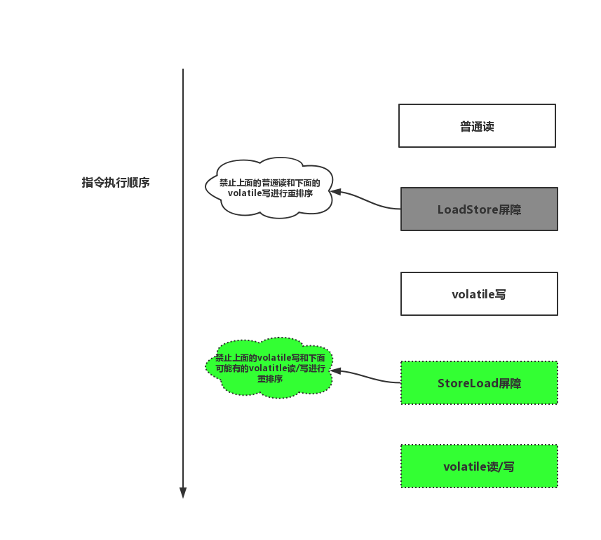
5.3.4 StoreLoad屏障
抽象场景：Store1; StoreLoad; Load2
Store1代表写入指令，Load2代表读取指令。Load2读取操作（read）执行前，要保证Store1的写入对所有处理器可见。StoreLoad屏障的开销是四种屏障中最大的。
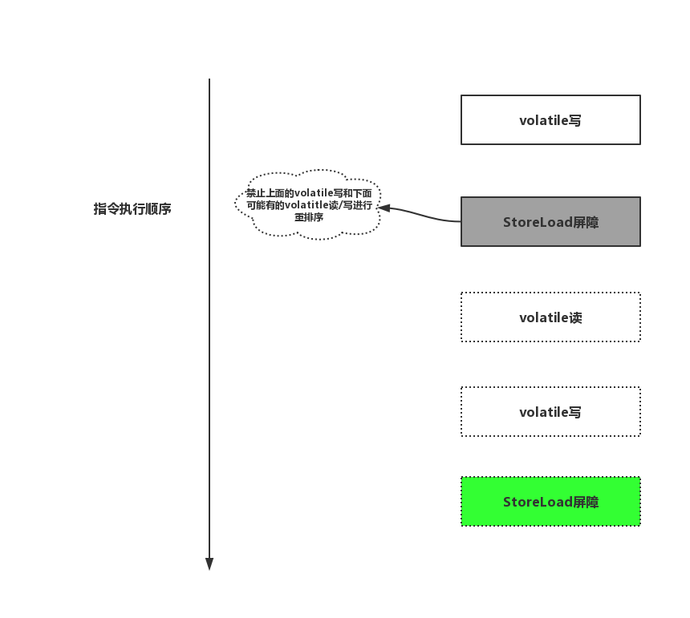
6、源码跟踪
在2.2.2 字节码流程基础上进行hotspot源码跟踪，被volatile修饰的字段会多一个 ACC_VOLATILE的flag，在给字段赋值的时候通过BytecodeInterpreter解释器来执行
##src/share/vm/interpreter/bytecodeInterpreter.cpp:1831
CASE(_putstatic):
{
u2 index = Bytes::get_native_u2(pc+1);
ConstantPoolCacheEntry* cache = cp->entry_at(index);
if (!cache->is_resolved((Bytecodes::Code)opcode)) {
CALL_VM(InterpreterRuntime::resolve_get_put(THREAD, (Bytecodes::Code)opcode),
handle_exception);
cache = cp->entry_at(index);
}
#ifdef VM_JVMTI
if (_jvmti_interp_events) {
//代码省略
}
#endif /* VM_JVMTI */
//判断i是否被volatile修饰
if (cache->is_volatile()) {
if (tos_type == itos) {
//整形字段修改
obj->release_int_field_put(field_offset, STACK_INT(-1));
} else {
//代码省略
}
OrderAccess::storeload();//赋值完成后插入storeload内存屏障，禁止上面的volatile写和下面的volatile读写重排序
} else {
//非volatile修饰处理 代码省略
}
...
首先我们关注cache->is_volatile()这段代码，cache是i在常量池缓存中的一个实例，这段代码是校验cache是否是被 volatile修饰，代码如下：
##src/share/vm/utilities/accessFlags.hpp:103
public:
// Java access flags
// ..代码省略
bool is_volatile () const { return (_flags & JVM_ACC_VOLATILE ) != 0; }
is_volatile是判断是否有 ACC_VOLATILE的flag标志，很显然变量i是符合这个条件的，所以结果必然返回true。接着，根据当前字段的类型来给i赋值，执行 release_int_field_put方法赋值。
##src/share/vm/oops/oop.inline.hpp:384
inline void oopDesc::release_int_field_put(int offset, jint contents)
{ OrderAccess::release_store(int_field_addr(offset), contents); }
赋值的动作被包装了一层，看看 OrderAccess::release_store做了什么事情呢？找到 OrderAccess::release_store的实现，代码如下：
##src/os_cpu/linux_x86/vm/orderAccess_linux_x86.inline.hpp:82
inline void OrderAccess::release_store(volatile jbyte* p, jbyte v) { *p = v; }
可以看到其实Java的volatile操作，在JVM实现层面第一步是给予了C++的原语实现。c/c++中的volatile关键字，用来修饰变量，通常用于语言级别的 memory barrier。被volatile声明的变量表示随时可能发生变化，每次使用时，都必须从变量i对应的内存地址读取，编译器对操作该变量的代码不再进行优化。
赋值操作完成以后，我们会发现还会执行一个 OrderAccess::storeload();的代码，它其实就是一个storeload内存屏障，JVM层面的四种内存屏障的定义以及实现
##src/os_cpu/linux_x86/vm/orderAccess_linux_x86.inline.hpp:34
inline void OrderAccess::loadload() { acquire(); }
inline void OrderAccess::storestore() { release(); }
inline void OrderAccess::loadstore() { acquire(); }
inline void OrderAccess::storeload() { fence(); }
##当调用storeload屏障时，它会调用fence()方法
inline void OrderAccess::fence() {
if (os::is_MP()) {//返回是否多处理器,如果是多处理器才有必要增加内存屏障
// always use locked addl since mfence is sometimes expensive
#ifdef AMD64
//__asm__ volatile 嵌入汇编指令
//lock 汇编指令,lock指令会锁住操作的缓存行,也就是缓存锁的实现
__asm__ volatile ("lock; addl $0,0(%%rsp)" : : : "cc", "memory");
#else
__asm__ volatile ("lock; addl $0,0(%%esp)" : : : "cc", "memory");
#endif
}
}
os::is_MP:判断是否是多核,如果是单核,那么就不存在内存不可见或者乱序的问题，volatile:禁止编译器对代码进行某些优化。
Lock :汇编指令，lock指令会锁住操作的缓存行(cacheline), 一般用于read-Modify-write的操作;用来保证后续的操作是原子的
cc：代表的是寄存器
memory：代表是内存
这边同时用了”cc”和”memory”,来通知编译器内存或者寄存器内的内容已经发生了修改,要重新生成加载指令(不可以从缓存寄存器中取),这边的read/write请求不能越过lock指令进行重排
7、写在最后
需要查看汇编指令的同学可以按照以下方式：
- 获取到编译动态链接库文件,下载完毕后需要复制至${JAVA_HOME}/jre/bin/service目录下
##windows版本 hsdis-amd64.dll
链接: https://pan.baidu.com/s/1pxrT0ny3csuCRNlPRvegIA 提取码: qr4k
- 测试类启动时configuration配置VM otions参数
-XX:+UnlockDiagnosticVMOptions -XX:+PrintAssembly VolatileTest(类名称) ##详细解释自行查阅
hotspot源码下载地址:
https://github.com/sccarterrans/hotspot
[参考资料]
http://ifeve.com/jvm-reordering/
https://juejin.im/entry/593e0ab25c497d006b93cfb1
http://gityuan.com/2015/10/24/jvm-bytecode-grammar/
https://my.oschina.net/tantexian/blog/808032
https://www.520mwx.com/view/32394
《Java并发编程的艺术》